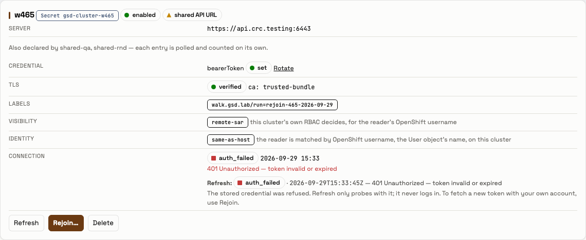
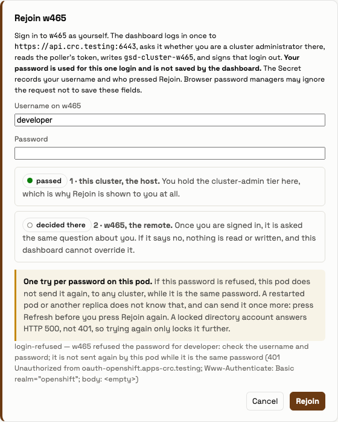
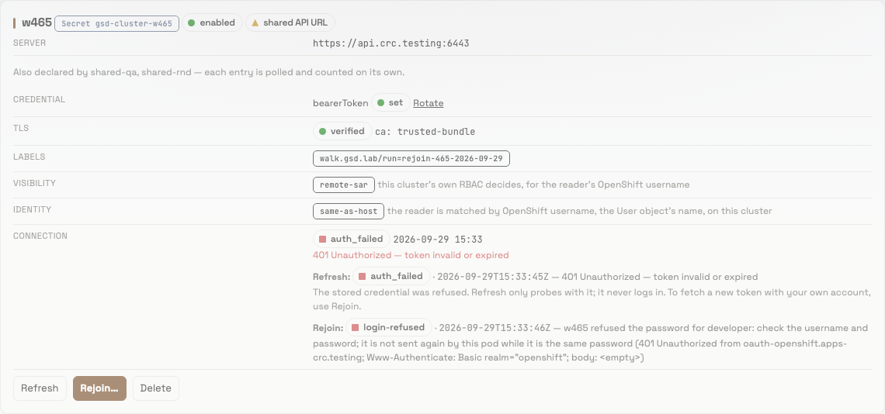
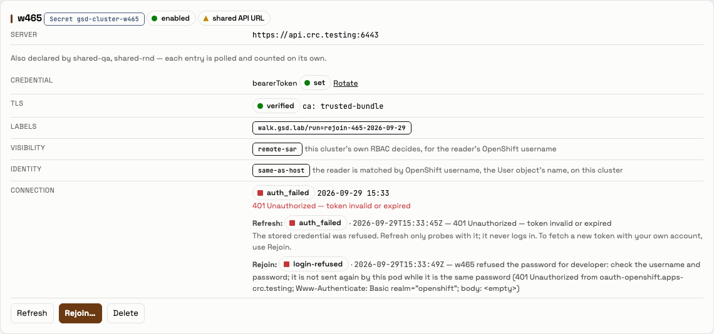
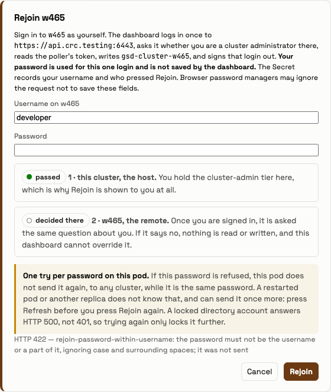
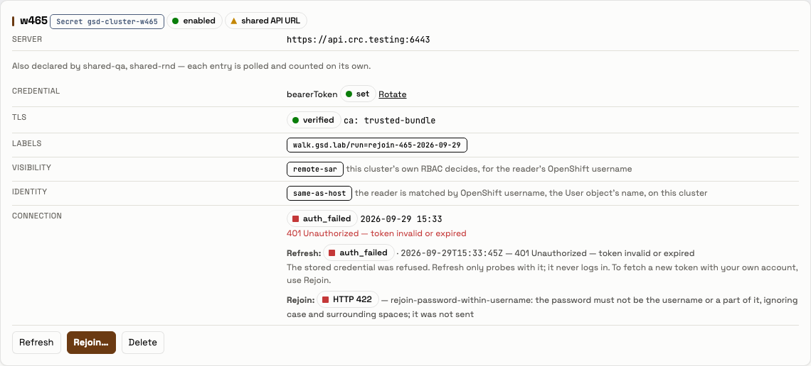

Outcome. The lab served application 1.19.0 at ad102d9f1f from start to finish (evidence/before-version.txt,
evidence/after-version.txt, evidence/end-version.txt). The Deployment carries the chart label
group-sync-dashboard-0.59.21 and runs image quay.io/ephico2real/group-sync-dashboard:1.19.0
(evidence/end-release.txt; helm list returned no release, so the chart version comes from that label).
The walker was developer, CRC's htpasswd account, holding the walk's temporary grant. It pressed Rejoin three times
through the page's own Rejoin dialog on the throwaway card w465, after that card's Refresh had answered
auth_failed. Playwright's response listener read each press's HTTP status and JSON answer off the wire
(evidence/walk-rejoin-answers.json, evidence/walk-output.txt). It never read the request body.
200 login-refused with "w465 refused the password
for developer". CRC's OAuth server logged a deny for it. The password was found 0 times in the answer, in the
page, in the pod log and in this folder.update. It was not refused before sending (not a 422). It was sent, and CRC refused it:
200 login-refused.developer. Rejoin answered 422 rejoin-password-within-username and sent nothing: no login
line and no OAuth event.cluster-rejoin-failed, 2 fleet-login-refused (the login module's line for
each Rejoin login), 0 fleet-login, 0 Traceback and 0 ERROR.The grant and the Secret were deleted by the walk's label. can-i answered no, then yes, then no. The PVC UIDs,
shared-qa's resourceVersion 2981054 and the fleet Lease (resourceVersion 6761163, no holder) were the same before
and after.
The operator decided this on 2026-09-29, on #465. Their words are quoted in the orchestrator's notes of
docs/specs/SPEC_D6_scrub_span.md: "These are highly vetted individuals. So let them rejoin with their password
without any hiccups." and "If a password is incorrect, just say so. … Just redact the password in the error logs."
So SPEC_D6's part (1), the refusal of a password found in Rejoin's own words, is not applied. #447's check stays:
local-development/gsd/rejoin.py line 166 raises rejoin-password-within-username before anything is sent.
| Row | Verdict | Evidence |
|---|---|---|
| A. A wrong password is answered plainly, sent, and redacted everywhere | PASS | Pressed at 15:33:46Z. HTTP 200 with {"outcome":"login-refused","message":"w465 refused the password for developer: check the username and password; it is not sent again by this pod while it is the same password (401 Unauthorized from oauth-openshift.apps-crc.testing; Www-Authenticate: Basic realm=\"openshift\"; body: <empty>)","at":"2026-09-29T15:33:46Z"} (evidence/walk-rejoin-answers.json). The password is 20 letters and digits, drawn by secrets.choice inside scripts/walk.py and never printed. It was searched for as typed and as its RFC 7617 Basic value. The answer's bytes held it 0 times, and so did the page's DOM once the answer was shown. The pod log since 15:29:21Z held it 0 times after A (221 lines) and again when scripts/walk.py ended at 15:33:53Z (232 lines); no login or Rejoin line was written after that: evidence/walk-podlog.txt (15:33:54Z) and evidence/end-podlog.txt (15:37:49Z) count the same 2 fleet-login-refused and 2 cluster-rejoin-failed. At 15:33:53Z none of the 16 .txt/.json files then in this folder held it (evidence/walk-output.txt); the files written later were checked once more, see "Redaction in this folder". It was sent: the pod logged fleet-login-refused … account=developer … rejoin_by=developer and cluster-rejoin-failed phase=credential outcome=login-refused cluster=w465 by=developer account=developer at 15:33:46Z (evidence/end-podlog.txt). That is rejoin.py lines 292–294, reached only when LoginError.bound says the password was on the wire. The oauth-server audit log recorded a developer cli authorize, deny 401, at 15:33:46Z (evidence/after-audit.txt). Screenshots 02-1280-A-dialog-answer.png and 03-1280-A-card-answer.png |
| B. A password that is one of Rejoin's own words is not refused | PASS | Pressed at 15:33:48Z. HTTP 200 with outcome login-refused, not a 422. The message is byte-identical to A's; only at differs (2026-09-29T15:33:49Z) (evidence/walk-rejoin-answers.json). It was sent: fleet-login-refused and cluster-rejoin-failed … outcome=login-refused at 15:33:49Z (evidence/end-podlog.txt), and a developer cli authorize, deny 401, at 15:33:49Z (evidence/after-audit.txt). The answer and the two lines hold 0 <redacted spans and 0 occurrences of update. See "What came back" item 1 for why this does not show that the accepted residual is gone. Screenshot 04-1280-B-card-answer.png |
| C. #447 is kept | PASS | Pressed at 15:33:51Z. HTTP 422 with {"detail":"rejoin-password-within-username: the password must not be the username or a part of it, ignoring case and surrounding spaces; it was not sent"} (evidence/walk-rejoin-answers.json). The card reads Rejoin: HTTP 422 — rejoin-password-within-username: …. Nothing was sent: no Rejoin or login line after 15:33:49Z (evidence/end-podlog.txt), and no audit event for developer after 15:33:49Z (evidence/after-audit.txt). This is the lab's own credential shape: CRC's developer password equals its username (evidence/lab-credential-shape.txt: password_equals_username=true, the comparison only). The operator kept #447 for exactly this case. Screenshots 05-1280-C-dialog-answer.png and 06-1280-C-card-answer.png |
| D. The pod log for the window | PASS | evidence/end-podlog.txt, from 15:29:21Z to 15:37:49Z: cluster-rejoin-failed 2 and fleet-login-refused 2 (A and B), fleet-login 0, fleet-logout 0, cluster-rejoin-review 0, cluster-rejoined 0, fleet-lookup 0, fleet-ping 0, lines naming the fleet account 0, Traceback 0, ERROR 0 |
| End state. Nothing of the walk remains, and nothing shared changed | PASS | Before and after table below. The label selects nothing (evidence/end-grant.txt, evidence/trap-delete.txt: No resources found twice). The Secret is gone (evidence/end-secret.txt: []). Discovery cycle=5 … removed=w465 at 15:37:29Z, then w465: its Secret is gone; the poll thread stops (history kept) (evidence/end-podlog.txt) |
| Before (15:29:21Z–15:29:23Z) | During | After (15:36:56Z–15:36:59Z) and end (15:37:49Z–15:37:51Z) | |
|---|---|---|---|
/api/version |
1.19.0, ad102d9f1f, dirty: false |
— | the same at both |
| PVC UIDs | data f065b7a4-535c-4ef1-868c-58f5afee4953, report-artifacts 08c7d45c-a3eb-47be-8506-f24ea7a3e0e3 |
— | identical at both |
gsd-cluster-shared-qa |
resourceVersion 2981054 | — | 2981054 at both |
| fleet-account Lease | 1 Lease, resourceVersion 6761163, holder "" |
6761163, "" (15:33:53Z) |
6761163, "" at both |
can-i update clusterrolebindings --as=developer |
no |
yes (15:32:26Z) |
no at both |
| the walk's label | selects nothing | ClusterRole gsd-walk-crb-update, ClusterRoleBinding gsd-walk-crb-update-developer |
selects nothing |
gsd-cluster-w465 |
absent | uid a2193fd8-…, config keys bearerToken, tlsClientConfig ({"insecure": false}), no annotation |
absent |
developer tokens, openshift-challenging-client |
5 | 5 | 5 at both: neither Rejoin login got a token |
| the fleet account's tokens | 2 | 2 | 2 at both |
| audit, the fleet account | — | — | 0 events, 0 authorizes since 15:29:21Z |
The rows come from evidence/{before,during,after,end}-{version,pvcs,sharedqa,lease,cani,grant,secret,tokens}.txt and
evidence/after-audit.txt. The dashboard proxy's developer tokens went from 46 to 47. That is the walk's browser
login: the credential and session allow pair at 15:33:39Z in evidence/after-audit.txt.
| Step | When (UTC) | What came back | Evidence |
|---|---|---|---|
| 1 | 15:29:21 | The exit trap is armed, then the before captures run | scripts/run.sh, evidence/start-instant.txt, evidence/before-*.txt |
| 2 | 15:29:23 | secret/gsd-cluster-w465 created from a mode-600 manifest |
evidence/secret-create.txt |
| 3 | 15:32:26 | The wait for the first auth_failed poll gave up after 180 s (w465 polled: 0 auth_failed line(s)), 2 s before discovery reached it (item 2 below) |
evidence/run-output.txt |
| 4 | 15:32:26 | The grant was created; can-i answered yes |
evidence/grant-create.txt, evidence/during-cani.txt, evidence/during-grant.txt |
| 5 | 15:32:28 | Discovery cycle=4 … added=w465, then cluster-unreachable … outcome=auth_failed cluster=w465 at 15:32:28 and again at 15:33:28 |
evidence/end-podlog.txt |
| 6 | 15:33:41 | After the 70 s wait: whoami cluster_admin: true. The row read auth_failed, rejoinable: true |
evidence/walk-output.txt |
| 7 | 15:33:45 | Refresh answered auth_failed · 2026-09-29T15:33:45Z — 401 Unauthorized — token invalid or expired … use Rejoin. and the card offered Rejoin… |
evidence/walk-output.txt, 01-1280-card-offers-rejoin.png |
| 8 | 15:33:46–15:33:53 | A, B and C, each from an empty dialog (both fields at length 0, type=password) |
the Definition of Done above |
| 9 | 15:33:54 | Deleted by label: the Secret, the binding, the role | evidence/delete.txt |
| 10 | 15:36:56 | The wait for removed=w465 gave up after 180 s (discovery removed w465: 0 line(s)). The after-* captures ran while w465 was still polled |
evidence/run-output.txt, evidence/after-*.txt |
| 11 | 15:36:59 | The exit trap's second delete found nothing | evidence/trap-delete.txt |
| 12 | 15:37:29 | Discovery cycle=5 … removed=w465, the shared-api-url warning state=cleared, and the poll thread stopped. The end-* captures followed |
evidence/end-*.txt |
The Rejoin lines, from evidence/end-podlog.txt, with the Kubernetes timestamp, the date, the level and the
logger's name cut. The pod logs in EDT (UTC−4). The first three lines are otherwise as the pod wrote them; the capture
redacted nothing in them.
11:33:45,362 cluster-refreshed cluster=w465 credential=bearer by=developer outcome=auth_failed
11:33:46,279 fleet-login-refused phase=credential outcome=login-refused cluster=w465 account=developer tls=trusted-bundle rejoin_by=developer action="the target refused the password for developer: check the username and password — it is not sent again by this pod while it is the same password, because each refused try counts toward the directory's lockout of the account" detail="401 Unauthorized from oauth-openshift.apps-crc.testing; Www-Authenticate: Basic realm='openshift'; body: <empty>"
11:33:46,281 cluster-rejoin-failed phase=credential outcome=login-refused cluster=w465 by=developer account=developer action="w465 refused the password for developer: check the username and password; it is not sent again by this pod while it is the same password" detail="401 Unauthorized from oauth-openshift.apps-crc.testing; Www-Authenticate: Basic realm='openshift'; body: <empty>"
11:33:49,386 fleet-login-refused phase=credential outcome=login-refused cluster=w465 account=developer tls=trusted-bundle rejoin_by=developer action="(the same as at 11:33:46)" detail="(the same)"
11:33:49,388 cluster-rejoin-failed phase=credential outcome=login-refused cluster=w465 by=developer account=developer action="(the same as at 11:33:46)" detail="(the same)"
The last two lines are shortened here. In evidence/end-podlog.txt their action and detail are byte-for-byte the
lines above them.
<redacted> span, because a refused login never writes Rejoin's question. The sentence on the
login-refused path (rejoin.py lines 294–296) does not contain the word update. The accepted residual (#465)
is in sentences that only a successful login reaches: who may {asked} there in the rejoined answer
(rejoin.py line 320) and may not {asked} there in not-cluster-admin (line 277), where {asked} is
update clusterrolebindings. SPEC_D6 records what update leaves on success: the answer reads who may <redacted> clusterrolebindings there; … and <redacted>d gsd-cluster-east here, and the lines read
question="<redacted> clusterrolebindings" and written=<redacted>d (docs/specs/SPEC_D6_scrub_span.md, the
table row "update, success", and the phase-2 text). By the code, those spans remain on 1.19.0: line 323 scrubs
the whole rejoined message with the password among the secrets. This walk places no correct password that is a
word of Rejoin's, so it neither shows those spans nor shows them gone. It shows only that a wrong update is sent
and refused, and that its answer and lines carry no span. That residual is the one the operator accepted (#465).discoveryIntervalSeconds, charts/group-sync-dashboard/values.yaml). Both
180 s waits in scripts/run.sh gave up before the next cycle. Cycle 4 added w465 at 15:32:28, 185 s after the
Secret. The grant's 70 s wait covered that gap: the card polled auth_failed at 15:32:28 and 15:33:28, before
scripts/walk.py began at 15:33:41. After the delete, cycle 5 removed w465 at 15:37:29, 215 s after the delete,
so the after-* captures ran while w465 was still polled. The end-* captures were taken by hand once
removed=w465 was logged. None of this changes a verdict; the waits are too short for this cadence.fleet-login-refused. That line belongs to the login module that Rejoin shares
(local-development/gsd/fleetlogin.py line 737). It carries account=developer rejoin_by=developer, and the
fleet account is named in 0 lines. There were 0 fleet-login (successful login) events.03-1280-A-card-answer.png is paler than the other captures. It was taken 400 ms after Cancel closed the
dialog. The cause was not measured. Its text matches the card's Rejoin line in evidence/walk-output.txt.scripts/walk.py checked the 16 text files
that existed when it ended (15:33:53Z); the 27 evidence files written afterwards, this README and walk.html were
checked once more after the folder was complete: grep -rIoE '[A-Za-z0-9]{20,}' --exclude-dir=screenshots reports/2026-09-29_rejoin-465-walk | sort -u lists five identifiers (persistentvolumeclaims,
discoveryIntervalSeconds, requestReceivedTimestamp, ldapConnectionBootstrap, developerCredentials) and one
macOS temp-path component, and nothing else. A 20-character password of letters and digits would be its own run.update (B) and developer (C). developer is also the lab
account's username, and its UI password equals it (evidence/lab-credential-shape.txt).sha256~ value in a capture is replaced
with sha256~<redacted>.<fleet account>. Leases are captured as
resourceVersion and holder only.export KUBECONFIG=<the lab kubeconfig>
reports/2026-09-29_rejoin-465-walk/scripts/run.sh # the trap, before, Secret, grant, 70 s, walk.py, delete, after
# once the pod logs `discovery … removed=w465` (up to 300 s later):
reports/2026-09-29_rejoin-465-walk/scripts/capture.sh podlog end "$(cat reports/2026-09-29_rejoin-465-walk/evidence/start-instant.txt)"
for k in cani grant secret lease tokens sharedqa pvcs version; do reports/2026-09-29_rejoin-465-walk/scripts/capture.sh "$k" end; done
scripts/walk.py reads developer's UI password from GSD_UI_PASSWORD. scripts/run.sh fills it from
crc console --credentials for that one command only.





